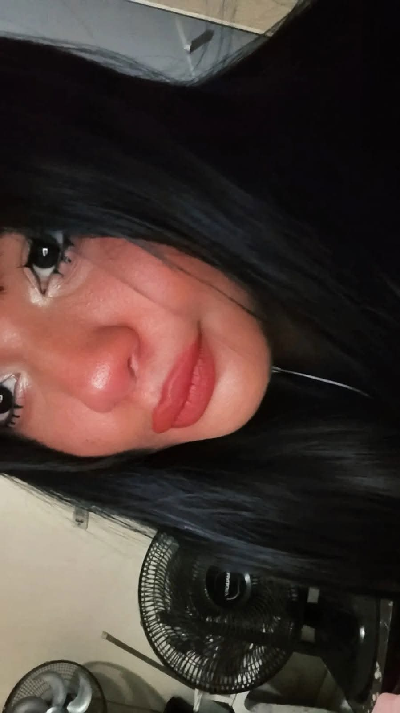

Eu te amo Gigi

Pelo visto eu tenho que dizer um Adeus não queria está precisando dizer isso você sempre esteve no meu coração o quanto eu te amo isso doi muito em te perder sempre fui uma pessoa tão vazia e solitaria eu não estou bem mentalmente eu nunca estive bem mentalmente eu apenas aguento todo dor para mim quando você me pedia desculpa você não precisava pedir desculpa eu sempre te entendia que você é uma pessoa esforçada e focada nos objetivos e eu te entendo tu foi a melhor pessoa na minha vida eu vi o que é realmente amar alguém e cuidar eu queria te proteger por toda minha e nunca abandonar você e você estava sempre cuidando de mim com maximo que podia eu sei que sofreu muito com perdas mais eu também sei como é perder as pessoas eu acabei perdendo muita pessoa meu coração sente tanta dor que não consigo mais sentir direito eu choreu tanto que não consigo chorar novamente eu sofri tanto que não consigo sofri mais eu tentei me matar varias e até nisso acabei fracassando eu sempre fui focado em objetivos e uma pessoa que se destaca e se dedica mais ninguém sabe o que eu sinto por dentro é um vazio que é dificil etender mais eu te amo muito você conseguiu me fazer o amor de uma forma diferente de uma forma reciprico de uma forma carismatica e com cuidado e que valoriza um o outro eu posso ser frio mais eu tento ser o maximo de carinhoso com você unica garota que fazia me sentir foi você cada momento ao seu lado me traz paz quando você achava que estava me machucando e pedia desculpa não estava eu estava muito feliz ao seu lado você nunca me traiu sempre me tratou bem foi a garota perfeita você é perfeita demais eu sei o que é sofrer depressão e ansiedade sentir medo eu senti tanto medo na vida que acabei me acostumando estou declarando tudo de mim para você isso é do mais profundo que tem estou me abrindo mentalmente para você